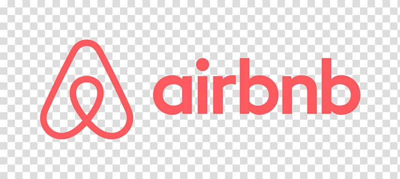

The objective of this analysis is to utilize publicly available Formula 1 racing data to understand key
performance metrics of drivers and teams. The project aims to provide insights into factors that influence
race outcomes, helping fans and analysts to better appreciate the intricacies of the sport.
The primary goal of this project is to develop a robust traffic sign recognition model to improve the safety and efficiency of self-driving cars. Additionally, the project explores applications in wearable technology to assist people with visual impairments.

The objective of this analysis is to utilize publicly available Airbnb data to discern the key factors that influence the pricing of Airbnb listings within the New York City area. This project intends to provide valuable insights and guidance to individuals considering property investments with the intention of Airbnb rental in the five NYC boroughs: Manhattan, Brooklyn, Queens, Staten Island, and the Bronx.

This repository contains code and data for predicting house prices based on various features. The project utilizes a dataset containing information about various properties, which is used to train and test predictive models.

This repository contains the code and documentation for the final year project on mammographic image analysis using the MIAS Mammography dataset. As my final year project, I decided to undertake this project to develop and evaluate a deep learning model for detecting and classifying abnormalities in mammographic images.
Predict which previously purchased products will be in a user’s next order based on their historical order data.
The goal is to improve the shopping experience by providing personalized product recommendations.

My Tableau portfolio showcases my ability to transform raw data into interactive, insightful dashboards. From analyzing public safety to business metrics, each project highlights my skill in delivering clear, actionable insights through data visualization.